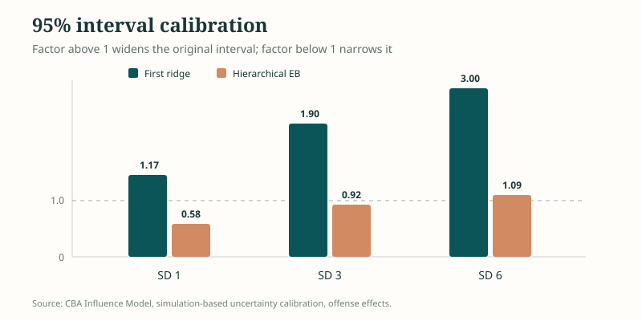

Estimating CBA Player Influence from Lineup and Possession Data
Reproducible modeling under weak signal and high lineup collinearity
Yimo Wang-Yao · Southern University of Science and Technology · November 2026
Summary.
This research develops a reproducible pipeline for estimating adjusted CBA player
influence from lineup and possession data. The central question is not only which
players rank highly, but how much confidence a ranking can support when player
exposure is sparse, lineups are highly collinear, and possession outcomes are noisy.
Research Question
How reliably can individual player influence be estimated from observed CBA
possessions, and how should uncertainty be represented when lineup effects and
signal strength are weak?
Data
2025-26 CBA season
420 regular-season games and 33 playoff games.
Data integration
Official CBA records for game, player, substitution, and box-score identity;
K8 event data for play-by-play, coordinates, and video availability.
Analysis unit
One offensive possession, linked to reconstructed five-player offense and defense lineups.
Reporting sample
287 players meeting the 200-possession reporting floor and training exposure.
Methods
Built crosswalks across official CBA and K8 schedules, identities, lineups, and event order.
Reconstructed five-player lineup intervals and segmented possessions using made field goals, free throws, turnovers, rebounds, and period boundaries.
Estimated possession-level ridge regularized adjusted plus-minus with separate offense and defense effects.
Extended the model with hierarchical empirical-Bayes partial pooling and a Gaussian variance-component Laplace approximation.
1. Rankings are unstable under weak lineup signal.
Across 200 game-level bootstrap resamples, the mean Spearman correlation with the
full-fit ranking was 0.786 for offense and 0.762 for defense. Median rank-interval
widths were 186 and 194 positions, respectively. Only a small leading group had
stable top-50 membership.
Figure 1. Game-bootstrap stability of player rankings. Broad ordering is preserved,
but individual ranks remain highly uncertain outside a small leading group.
2. Nominal confidence intervals require explicit calibration.
First-ridge intervals understated uncertainty at every simulated signal strength,
with nominal 95% calibration factors of 1.171, 1.899, and 2.999 at signal standard
deviations 1, 3, and 6. Hierarchical empirical-Bayes intervals were conservative at
weak and medium signal. Leave-one-replicate-out calibration restored approximately
0.95 coverage, but stronger signal required substantially wider intervals.

Figure 2. Calibration factors for nominal 95% intervals. A value above 1 widens the
original interval; a value below 1 narrows it.
3. Partial pooling is useful but not a substitute for identification.
Hierarchical empirical Bayes improved several regular-season validation metrics,
but did not improve every playoff holdout metric. Its coefficients were highly
correlated with the first ridge fit, which indicates that shrinkage stabilizes
estimates but does not resolve lineup selection or hidden interactions.
Limitations
The coefficients are adjusted on-court associations, not causal effects. Lineup
interactions, unobserved player roles, and private event-level data limit what the
current ranking can support. The variance-component approximation is not an exact
Bayesian posterior, and interval calibration depends on transfer assumptions from
the controlled simulation.
Reproducibility and Data Availability
The public summary reports aggregate diagnostics and excludes event-level data and
private code. Source identities, snapshot policies, and provenance rules are tracked
separately. Access to the private repository can be requested from the author.
Takeaway.
The project shows why a single CBA player ranking should be treated cautiously:
regularization and partial pooling improve stability, but uncertainty calibration
and explicit reporting floors are essential when lineup signal is weak.
Selected References
Sill, J. (2010). Improved NBA Adjusted +/- Using Regularization and Out-of-Sample Testing. MIT Sloan Sports Analytics Conference.
Ghimire, S., Ehrlich, J. A., and Sanders, S. D. (2020). Measuring individual worker output in a complementary team setting. PLOS ONE, 15(8), e0237920.